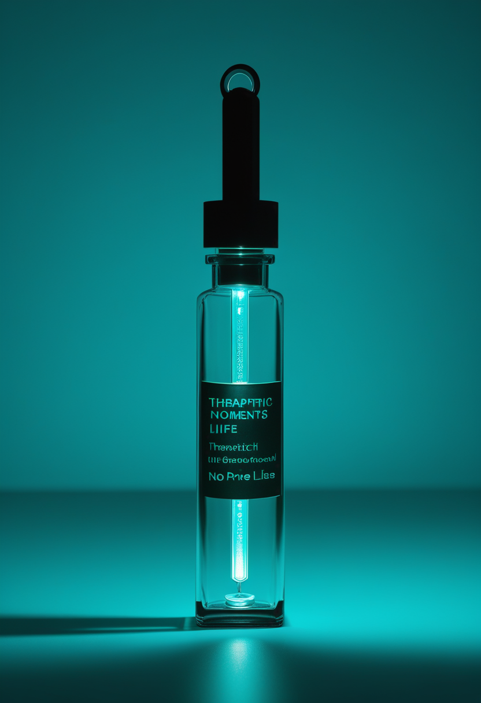
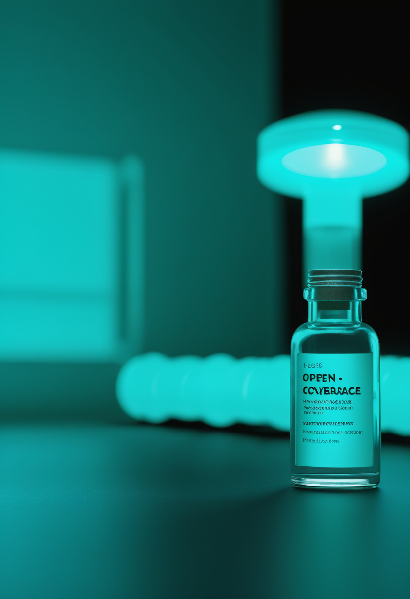
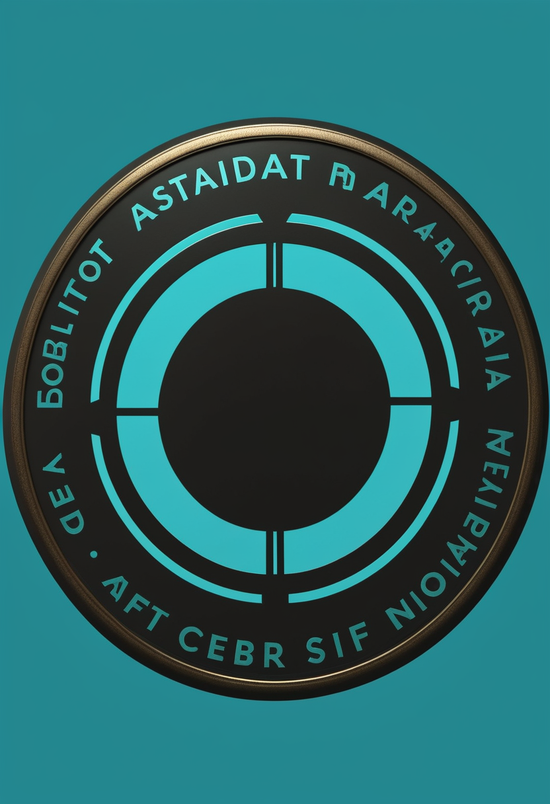
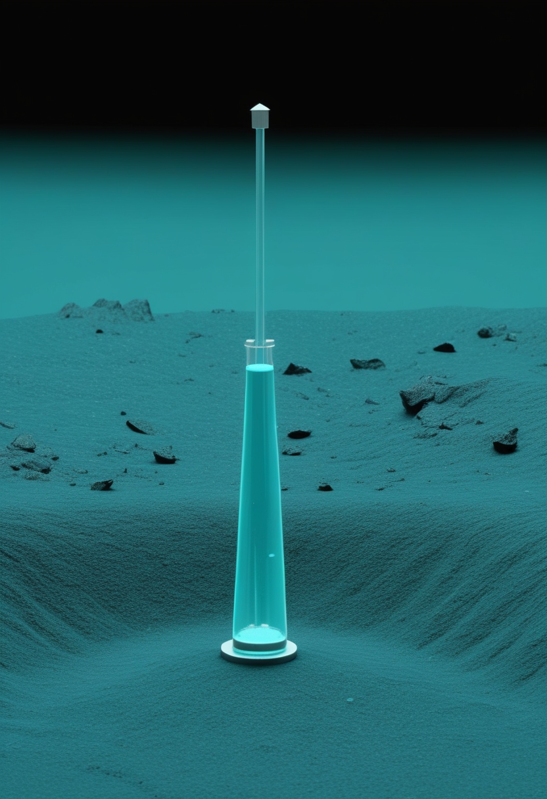

火曜日の便り。DRCのブンディブギョ型エボラは、9月13日の疫学報告で確定7,200例・死亡3,475人に達し、致死率48.3%、流行のピークは8月第3週だったとされた。それでも直近2日で+178例・+77人と数字は増え続けている。国境の東側のウガンダは42日間の無発生を経て終息を宣言した。命の章では、ISEMBYLDに値段がつき体重40kgで年間約42万ドル(正味約31万ドル)となったこと、患者団体Cure SMAが9月30日にアクセスをめぐるウェビナーを開くこと、イトビスマの欧州承認をめぐる前号の記載を訂正したことを伝える。自由の章では、NeuralinkのVOICE試験がALS患者の発話再生を目指していること、Precision・Synchron・Paradromicsの規制上の到達点がまだ出そろっていないこと、視線計測研究が一つの分野地図として描かれたことを報じる。基盤の章では、DRCエボラの最新値とウガンダの終息宣言に加え、バングラデシュの麻疹による死者が1,002人に達し2,000万回分のワクチンでも抑えきれていないことを伝える。畏敬の章では、ハッブルとウェッブが海王星の外に27個の小天体を見つけ理論の予測より小さな天体が少なかったこと、Rigettiが量子ビットを減らして最適化問題を解く手法を示したこと、ハンチントン病の遺伝子治療AMT-130がBLA提出まで進んだ一方で4年データはまだ出ていないことを紹介する。美の章では、死後70年のデジタル複製権を定めるNO FAKES Act、身体を得て歩き出したショウジョウバエの全脳エミュレーション、そして『設計による真正性』という心を守る新しい発想という、三つの『誰が決めるのか』を取り上げる。
DRC保健当局が9月13日に公表した疫学報告によれば、ブンディブギョ型エボラの確定例は7,200例、死亡は3,475人(致死率48.3%)、回復は1,712人。隔離・入院中の患者は923人で、流行は7州62保健区に及ぶ。報告はこの流行のピークが2026年8月第3週であったとし、確定例と死亡の曲線は緩やかな減少に向かっているとした。接触者追跡率は88%。一方で、前号で扱ったECDC集計の9月10日時点(確定7,022例・死亡3,398人)から2日で+178例・+77人である。『減少に向かっている』という判断と、1日90人近い新規確定例が同居している。国境の向こうのウガンダでは、8月下旬に42日間の無発生を経て終息が宣言された。確定20例、回復18人、死亡2人。同じウイルスが、川の東と西で違う結末を迎えつつある。

前号で『価格は未設定』と伝えたISEMBYLD(apitegromab-mstn)に、値段がついた。Scholar Rockが設定した卸取得価格(WAC)は1バイアルあたり11,659ドル。投与量は年齢と体重で決まるため患者ごとに総額は変わるが、体重40kgの平均的な患者で年間およそ42万ドルの総額になる。同社は、服薬継続率と支払者へのリベート・値引きを織り込んだ正味の年間価格をおよそ31万ドルと見積もっている。本紙が前号までに伝えたICERの費用対効果の目安は年間4,600〜30,200ドルで、目安と実売価格の間には一桁以上の開きがある。FDAの承認は9月11日、対象はSMN2標的治療を受けている2歳以上の小児と成人で、4週ごとの点滴投与(推奨用量10 mg/kg)である。

値段が決まると、次の論点は誰が使えるかになる。患者団体Cure SMAは承認を歓迎する一方で、9月30日(米中部時間午前11時/東部時間正午)に地域向けウェビナーを開き、ISEMBYLDについての説明と、広いアクセスを確保するための次の段階、そして本人と家族が医療チームと判断するための実務的な資料を提供するとしている。承認から19日後という日程は、保険の適用方針が固まる前の段階にあたる。価格が公表されたことで、議論の重心は『承認されるか』から『保険がどこまで払うか』へ移った。次世代薬サラネルセンの第III相3試験は、乳児から成人までを対象に、いずれも5年間の追跡を予定して並行して動いている。

前号の本欄で、髄腔内投与の遺伝子治療イトビスマ(オナセムノゲン アベパルボベク)について『欧州ではCHMPが肯定的見解を出した』と記した。手続きはすでに一段先へ進んでいた。欧州医薬品庁の記録によれば、イトビスマは2026年6月30日付でEU全域に有効な販売承認を得ており、欧州委員会による承認は7月2日である。対象はSMN1遺伝子の両アレル変異を持つ5q型SMAの2歳以上の小児、青年、成人で、この幅広い患者層に対してEUで承認された唯一の遺伝子補充療法になる。根拠は登録試験STEERと、補助的な第IIIb相STRENGTH、第I/II相STRONG。AAV9をベクターとし、機能するSMN1遺伝子のコピーを1回の髄腔内注射で届ける設計で、静注のゾルゲンスマが適さない年長者に道を開くという位置づけになる。
今日のSMA欄は、価格・アクセス・訂正の3本になった。ISEMBYLDは承認とほぼ同時に値段が出て、正味31万ドルという数字がICERの目安の10倍以上にあることが明らかになった。患者団体のウェビナーが『広くアクセスできるか』を議題に掲げているのは、この差を前提としている。イトビスマの欧州承認が7月2日だったという訂正も同じ話につながる。承認の地図はすでに広がっていて、残る問題は支払いの地図である。前号で『効くかどうかから、どこで、いつ、誰に届くかへ』と書いたが、今号でその『誰に』が価格によって区切られ始めた。
Neuralinkの臨床研究のうち、いま最も具体的な成果が出ているのは運動ではなく発話である。同社のVOICE試験は、発話の産生にかかわる脳領域の信号を解読し、リアルタイムの発話を取り戻すことを目的として2026年1月に目標が示された。被験者の一人Kenneth Shock氏はALSの患者で、同じ1月にN1インプラントの植込みを受けた。報じられている仕組みは、神経信号をリアルタイムで捉えて音素へ解読し、語へ組み立て、合成音声として読み上げるというもので、発症前(2020年)の本人の声を再現する設計だという。3月31日、イーロン・マスク氏がX上で試験の成功を公表し、動画を示した。装置が読むのは思考一般ではなく『話そうとしている』ことに関係する信号に限られる。本号で参照できたのは二次報道と同社の公表であり、査読論文は確認できていない(要確認)。
話題の量と規制上の到達点は一致していない。Precision Neuroscienceは薄膜型のLayer 7 Cortical InterfaceでFDAの510(k)クリアランスを得ており、最長30日までの植込みが認められる無線BCIとしては初のクリアランスにあたる。ただし510(k)は既存機器との同等性による市販前届出で、恒久植込みの有効性を問う市販前承認(PMA)ではない。そのPMAを最初に取りにいくと見られているのがSynchronで、血管内留置型のStentrodeについて2026年の主要試験(ピボタル試験)を準備している。2025年11月6日に発表した2億ドルのシリーズDは、この試験と初代機の商用化準備に充てられる。Paradromicsは高帯域のConnexusについて2025年11月にFDAの治験機器免除(IDE)を得て、2026年2月から被験者の組み入れを始めた。麻痺に対する植込み型BCIで市販前承認を得た製品は、本稿執筆時点でまだ存在しない。
視線計測の位置づけを、分野全体の地図として描いた研究がある。Journal of Eye Movement Researchに載った科学計量とコンテンツ分析の論文は、2020年から2025年に出た人間とコンピュータの相互作用(HCI)分野の視線計測論文1,033本を対象とし、主題の分布を調べた。最も大きな主題はXR(拡張現実・仮想現実)環境への統合で、視線は操作の入力としてだけでなく、利用者の行動を分析する道具としても使われている。もう一つの流れは多モード化で、視線に手のジェスチャを重ねると操作が効率的かつ自然になり、頭部や手の情報を足すと意図の推定と選択の精度が上がる、という知見が繰り返し報告されている。
前号では『資金・運用時間・診断精度』という三つの評価軸を挙げた。今号で足すべき四つ目は規制上の資格である。Precisionの510(k)、Synchronの PMA準備、ParadromicsのIDEは、どれも『使える』ことの証明ではなく『売ってよい』ことの証明の段階が違うだけで、同じ列に並べて比較できるものではない。NeuralinkのVOICEが示したのは臨床の到達点で、規制の到達点ではない。前号で扱った中国NEO(2026年3月にNMPAのクラスIII承認、承認48時間以内に診療報酬コード)は、この列の最も先まで進んだ例になる。
DRCのブンディブギョ型エボラについて、9月13日付の疫学報告が新しい数字を出した。確定7,200例、確定例のうち死亡3,475人、致死率48.3%。回復者は累計1,712人で、直近24時間で20人が新たに回復と判定された。現在隔離または入院中の患者は923人。流行域は7州62保健区で、前号から州数・保健区数は変わっていない。注目すべきはトレンドの記述で、報告はこの流行のピークが2026年8月第3週であったとし、確定例と死亡の曲線が緩やかな減少に向かっているとする。接触者追跡率は88%に達した。ただし数字そのものはまだ増えている。前号で扱ったECDC集計の9月10日時点(確定7,022例・死亡3,398人)と比べると、2日間で+178例・+77人である。減少局面に入ったという判断は、累計が止まったという意味ではない。
同じウイルスの流行が、国境の東側では終息した。WHOアフリカ地域事務局によれば、ウガンダは42日間にわたり新たな確定例が出なかったことをもってエボラ流行の終息を宣言した(宣言日はECDCが8月25日とし、報道は8月27日付で伝えている。要確認)。5月15日の流行宣言から数えて、同国が報告した確定例は20例。18人が回復し、2人が死亡している。42日というのは、エボラの最大潜伏期間の2倍にあたる国際的な基準で、最後の患者(DRCからの輸入例)が7月16日に退院してから起算された。カンパラで確認された2例は5月15日と16日、いずれもDRCからの渡航者だった。DRC側の累計7,200例と、ウガンダ側の20例。同じ型のウイルスに対して、この差が何によって生じたのかは、流行後の検証課題として残る。

世界最大の麻疹流行は、いまバングラデシュにある。同国保健サービス総局(DGHS)の集計によれば、3月の流行開始からの死亡は1,002人に達した。内訳は検査確定100人と疑い902人で、多くが子どもである。感染は疑い例を含めて187,484件、検査確定例は約19,900例。米CDCは、人口1億7,800万人のこの国が現在世界最大の麻疹流行下にあるとしている。政府は4月5日に生後6か月〜5歳を対象とする緊急の麻疹・風疹ワクチン接種を始め、4月20日に全国へ拡大した。それでも死者は増え続けた。9月14日のAl Jazeeraの分析によれば、2,000万回分規模の接種にもかかわらず流行を抑えきれていない。背景にあるのは接種率の崩れで、6年間で88.6%から57%へ低下した。WHOとUNICEFは、2024年から2025年の政変期に生じた予防接種事業の空白を主因に挙げている。
3本を並べると、流行の『終わり方』が三通りに分かれる。ウガンダは42日という明確な基準で終わり、DRCはピークを過ぎたという曲線の判断に入り、バングラデシュはワクチンを配りながらまだ終わりが見えない。共通するのは、終息を決めるのが治療薬ではなく監視と接種の体制だという点である。DRCの接触者追跡率88%は、前号で扱った『症例の発見の遅れ』というWHOの指摘に対する改善の指標にあたる。
ハッブルとジェイムズ・ウェッブの両宇宙望遠鏡を組み合わせ、海王星より外側を回る小天体(太陽系外縁天体、TNO)を調べた成果が、9月8日付でThe Astronomical Journalに2本同時に掲載された。対象は新たに見つかった27個で、可視光に強いハッブルと赤外線に強いウェッブを併用して色・組成・サイズ分布を測っている。最小のものは直径およそ5km(約3マイル)で、地上の最も感度の高い望遠鏡で検出できる限界の5分の1にあたる。予想と食い違ったのは個数で、惑星形成の一部のモデルが予測するよりも小さな天体が少なかった。カイパーベルトが衝突によって想定どおりには砕かれてこなかったことを示唆する。もう一つの発見は色で、小さな天体の色が大きな仲間と同じ関係に従っていた。数十億年を経ても、生まれたときの表面の性質が残っているということになる。研究チームはヴィクトリア大学と北アリゾナ大学の博士課程学生がそれぞれ率いた。
量子計算の実利用に近づく道は、量子ビットを増やすことだけではない。Quantum Computing Reportが9月に伝えたところでは、Rigettiの研究者が、扱う古典変数の数より少ない物理量子ビットで組合せ最適化問題を解く手法をPhysical Review Applied誌に報告した。9量子ビットの超伝導プロセッサ上で実際に実行し、手法が動くことを検証している。量子ビット数がそのまま解ける問題の規模を決めるという単純な前提に対し、少ない量子ビットでより大きな問題を扱う設計は、実機の制約が厳しい今の段階で特に価値を持つ。研究はDARPAと米エネルギー省NERSCの支援を受けている。誤り訂正の側で高速化を競う流れ(前号のチャルマース工科大学の成果など)と並び、こちらは量子ビットという資源そのものの使い方を見直す動きにあたる。
本紙が前号・前々号で『9月中に公表の見通し』と伝えてきたuniQureのハンチントン病遺伝子治療AMT-130の4年時点データは、本稿執筆時点(9月15日朝)でまだ公表されていない。手続きの側は先に進んだ。同社は9月2日、一般名をifezuntirgene inilparvovecとする同剤の生物学的製剤承認申請(BLA)をFDAへ提出したと発表している。STATが9月10日に出した事前解説によれば、公表されるのは第I/II相試験の高用量・低用量それぞれの追跡データで、焦点は効果の持続性にある。同社の最高医学責任者は、FDAの諮問委員会(AdCom)が開かれる見込みだと述べている。承認されれば、ハンチントン病で初の疾患修飾療法になる。AAVベクターで治療遺伝子を線条体へ直接送り、変異ハンチンチンタンパク質の産生を抑える設計である。
今日の3本は、いずれも『予想との差』を扱っている。TNOは理論が予測した小天体の数より実測が少なく、Rigettiの手法は必要な量子ビット数が古典変数の数より少なくて済むことを示し、AMT-130は申請が先に進んで肝心のデータが後から来る。前号のLUMI-IQ(2029年までに最大9個の耐故障論理量子ビット)が工程表の話だったのに対し、今号のRigettiは同じ目標に対する『資源の使い方』の見直しにあたる。
倫理の議論が、はじめて条文の形になった。米上院司法委員会は6月、NO FAKES Act(Nurture Originals, Foster Art and Keep Entertainment Safe Act)を全会一致で可決し、本会議へ送った(可決日は6月18日とする報道と6月26日とする報道があり、本号では日付を特定しない。要確認)。法案は個人に自らのAI複製についてのほぼ排他的な権利を認め、その権利は相続人・遺言執行者・遺産財団へ、本人の死後少なくとも70年にわたり引き継がれる。無許諾のデジタル複製を制作した者、企業、場合によっては配信した事業者も責任を負い、法定損害賠償は1件あたり最大75万ドル。利用を許諾する場合の契約期間には上限が置かれ、成人は10年、未成年は5年とされる。同意を表明できない人をどう守るかという倫理の問いに、この法案は『遺族に権利を渡す』という一つの答えを与えている。成立にはなお本会議の審議が残る。
全脳エミュレーションの議論には、長く実物がなかった。Eon Systemsが3月7日に公開したデモンストレーションは、成体のショウジョウバエ(Drosophila melanogaster)について、脳全体の計算モデルを物理シミュレーション上の体に接続した『身体を持つ全脳エミュレーション』だとされる。基礎となったのはFlyWireコンソーシアムの電子顕微鏡データで、再構成されたのは139,255個のニューロンとおよそ5,000万のシナプス結合。神経伝達物質の種類は機械学習で推定した。体の側は物理エンジンMuJoCoで作り、神経の発火から動作までの環を閉じている。用いたニューロンモデルは最も単純な部類だが、行動の再現率はおよそ91〜95%に達し、学習データを一切与えずに歩行・毛づくろい・摂食が現れたという。同社が次に挙げる目標はマウスの脳で、ニューロン数はおよそ7,000万、ハエの約500倍になる。
法と神経科学を接続する議論も進んでいる。Frontiers in Psychologyに2026年に掲載された論考は、認知的自由(cognitive liberty)を『同意なしに、生物工学的な手段によって脳の過程へ干渉・侵入・操作・監視されない権利』と定義したうえで、この権利をデジタル空間でどう守るかを論じる。鍵になる概念が『設計による真正性(authenticity by design)』で、事後の規制ではなく、装置とサービスの設計段階に真正性の要件を組み込むという発想である。関連して、生成AIを用いたデジタル追悼技術の倫理的・心理的影響を扱う系統的文献レビューは、長期化した悲嘆症状、感情的な過度の依存、同一性の混乱といった害が、未処理の喪失を抱える人で特に生じやすいと整理している。
3本は『誰が決めるのか』で並ぶ。NO FAKES Actは遺族と遺産財団に決定権を置き、『設計による真正性』は設計者に義務を負わせ、ショウジョウバエのエミュレーションは決定権の所在を問う前に技術の到達点を示す。ハエ139,255個からマウス7,000万個への約500倍と、人の脳の約860億個との距離を並べると、実装が倫理に追いつく日はまだ遠い。
火曜日の便り。DRCのブンディブギョ型エボラは、9月13日の疫学報告で確定7,200例・死亡3,475人に達し、致死率48.3%、流行のピークは8月第3週だったとされた。それでも直近2日で+178例・+77人と数字は増え続けている。国境の東側のウガンダは42日間の無発生を経て終息を宣言した。命の章では、ISEMBYLDに値段がつき体重40kgで年間約42万ドル(正味約31万ドル)となったこと、患者団体Cure SMAが9月30日にアクセスをめぐるウェビナーを開くこと、イトビスマの欧州承認をめぐる前号の記載を訂正したことを伝えた。自由の章では、NeuralinkのVOICE試験がALS患者の発話再生を目指していること、Precision・Synchron・Paradromicsの規制上の到達点がまだ出そろっていないこと、視線計測研究が一つの分野地図として描かれたことを報じた。基盤の章では、DRCエボラの最新値とウガンダの終息宣言に加え、バングラデシュの麻疹による死者が1,002人に達し2,000万回分のワクチンでも抑えきれていないことを伝えた。畏敬の章では、ハッブルとウェッブが海王星の外に27個の小天体を見つけ理論の予測より小さな天体が少なかったこと、Rigettiが量子ビットを減らして最適化問題を解く手法を示したこと、ハンチントン病の遺伝子治療AMT-130がBLA提出まで進んだ一方で4年データはまだ出ていないことを紹介した。美の章では、死後70年のデジタル複製権を定めるNO FAKES Act、身体を得て歩き出したショウジョウバエの全脳エミュレーション、そして『設計による真正性』という心を守る新しい発想という、三つの『誰が決めるのか』を取り上げた。
では、また明日の朝に。 — JaH